🧪 My Experiments
When I get the chance, I love building playful prototypes that blend technology, music, and art.
These are some personal projects I built at home, driven by curiosity, creativity and a desire to keep learning.
🎸 Projection Mapping Guitar
A projection mapping proof of concept where I captured my guitar’s pitch, turned it into a live sine wave animation with a custom Unity shader,
and projected it directly onto the guitar's neck. I used an OptiTrack Trio to track the guitar’s position in real-time so the animation stayed aligned as I moved.
The registration was a bit rough, but I'd love to revisit this idea in the future using ARKit.
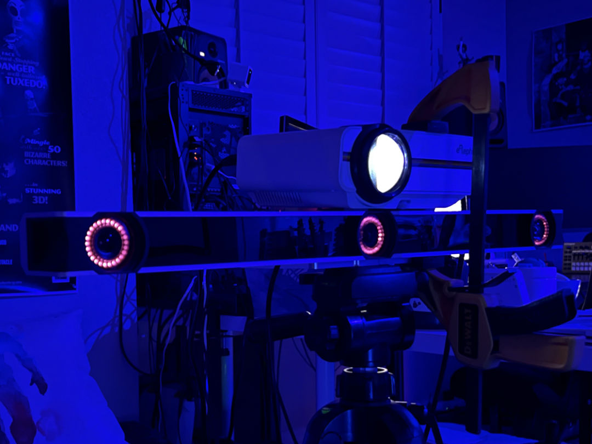
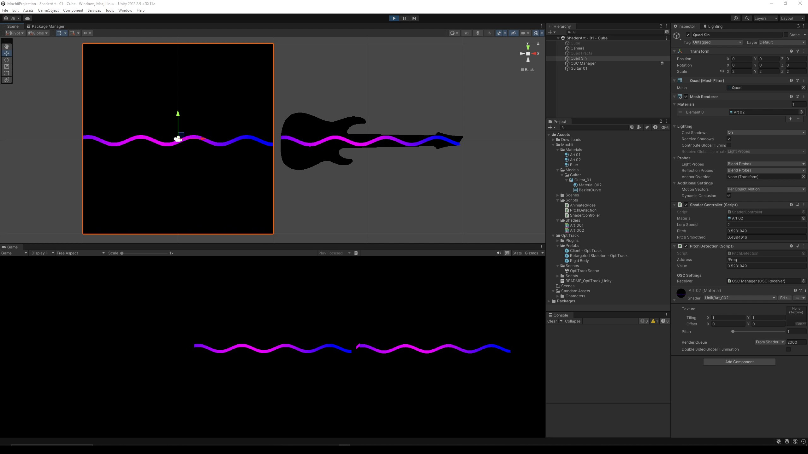
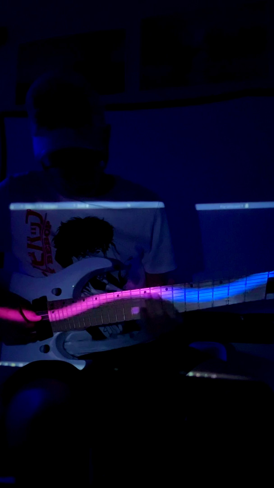
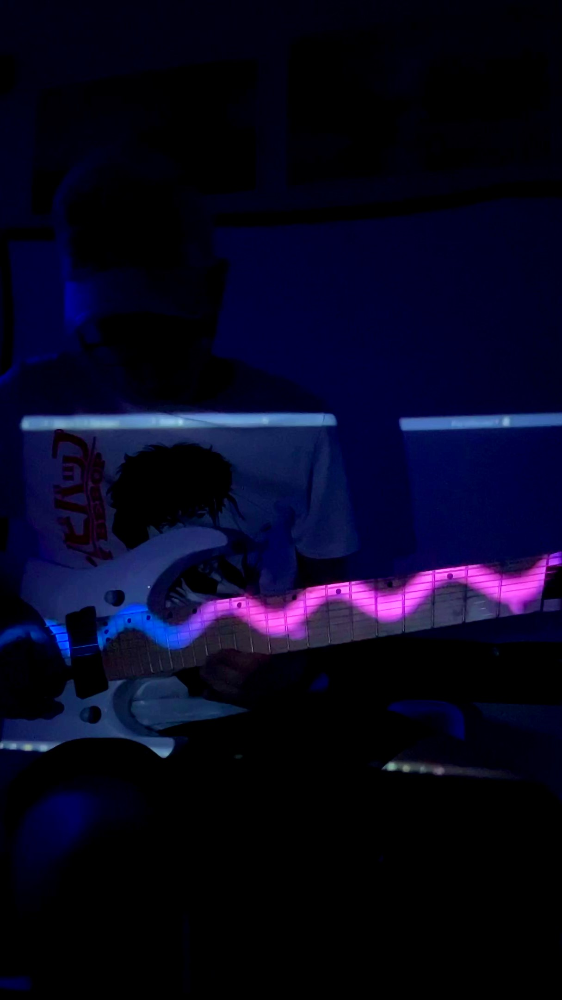
🎶 Audio-Synced Animation Show
My wife and I are a musical duo called Mochii Project. For one of our live performances,
I created a variety of simple Unity-powered visuals that synced with the tempo and triggered at specific moments within the songs.
I’ve always wanted to create a fully immersive show experience, and this was my modest first attempt.
I'd love to build something even more ambitious in the future.
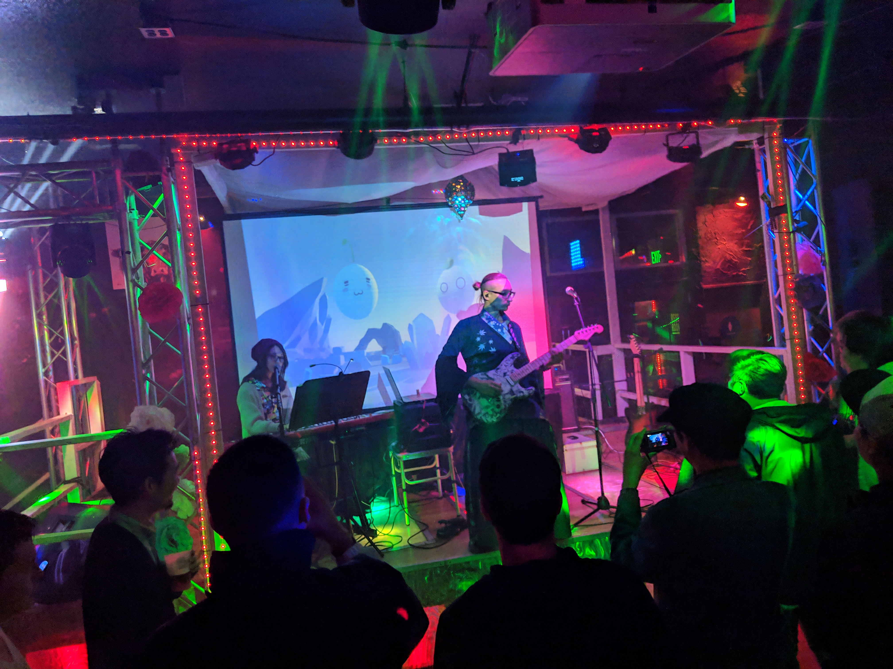
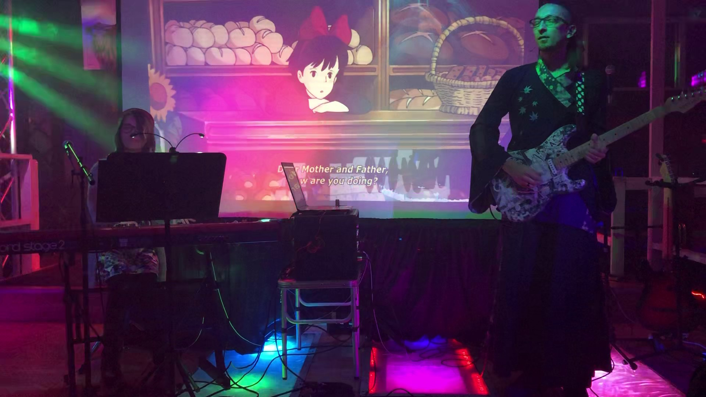
🎸 The Mangaster
A DIY electric guitar I built by assembling custom-selected hardware and decorating the body with pages from Knights of Sidonia, one of my favorite manga.
I wanted the pages to be in Japanese, so I bought two extra volumes during one of our trips to Japan.
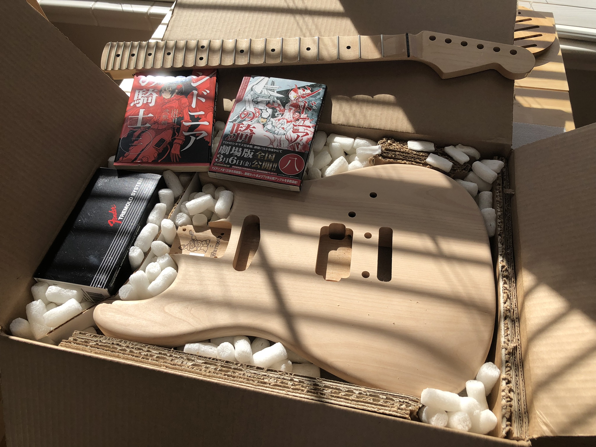
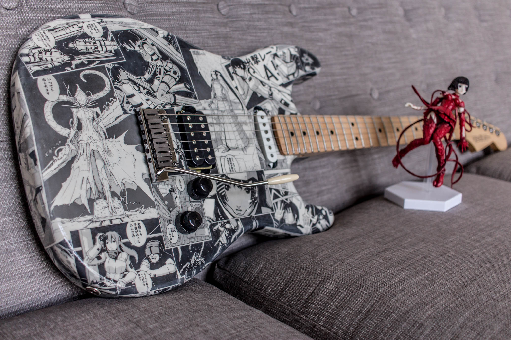

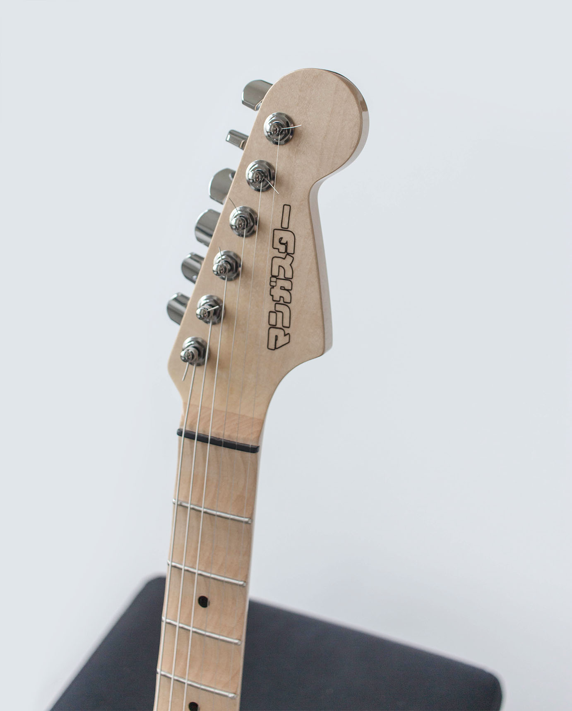
🛹 Electric Skateboard
A DIY electric skateboard I built from scratch, controlled with an Arduino and a Bluetooth Wii Nunchuck clone.
It turned out way more powerful than expected and worked great — at first. However,
I quickly learned that Bluetooth signals were very prone to interference in a big city like San Francisco, and unfortunately,
the safety mechanisms I coded didn't work as intended. Luckily, nobody got hurt, but it scared me enough to shelve the project and rethink the remote system.
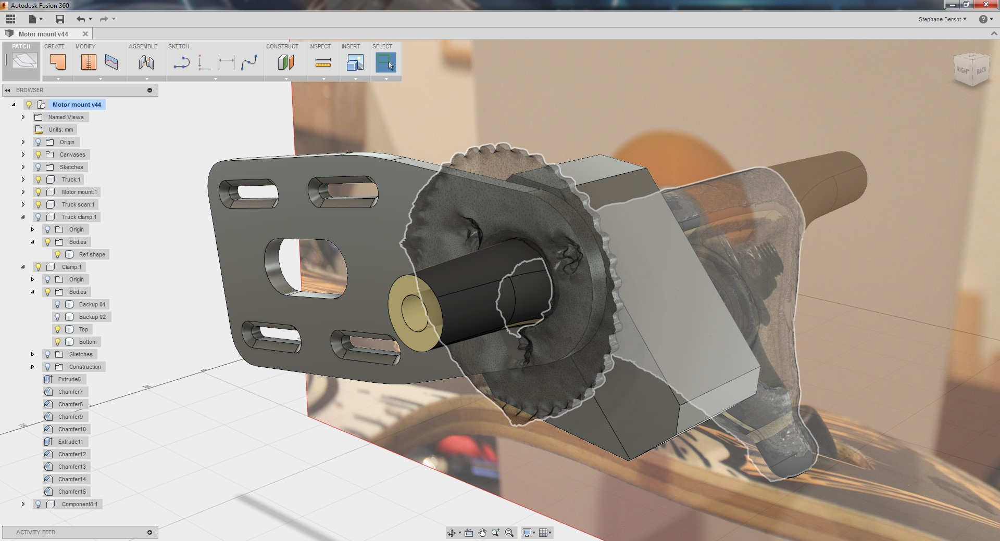

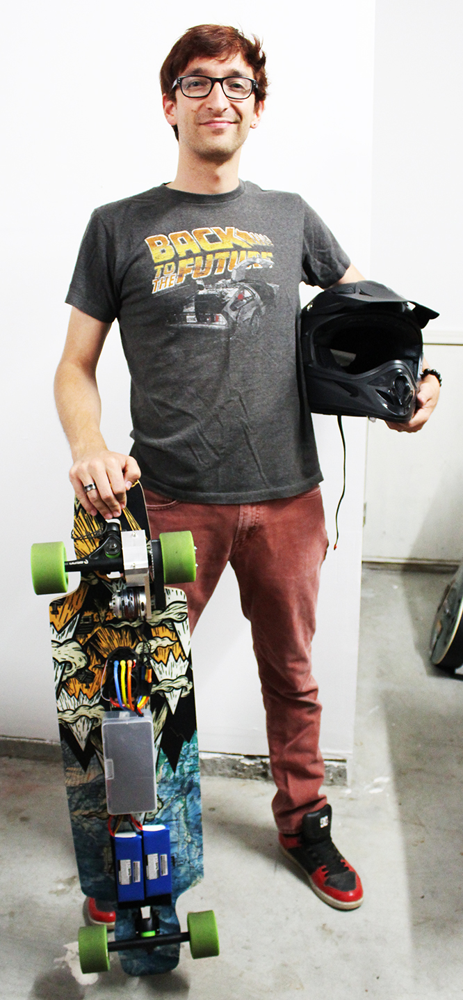
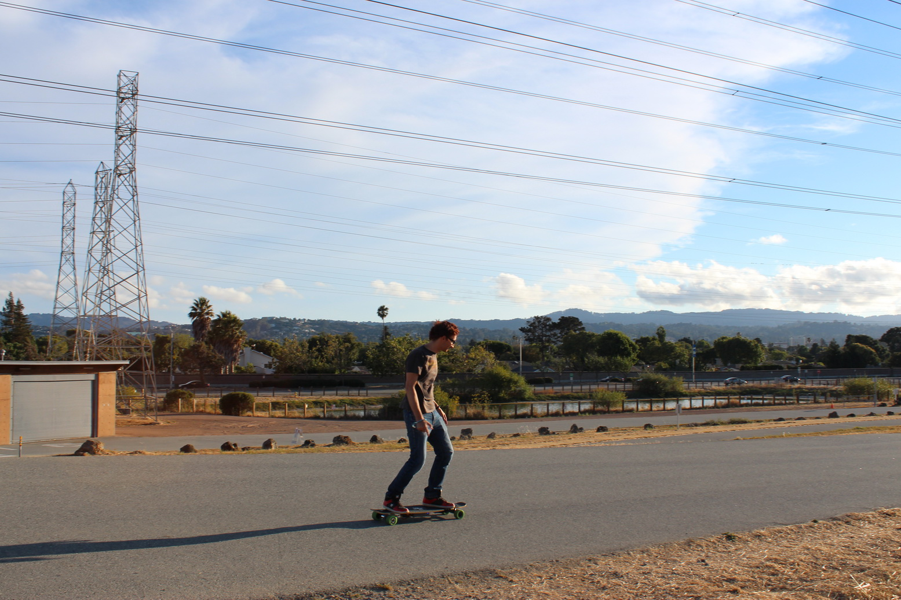
🤘 Leap Motion Rock
While I was working at Autodesk, I got early access to the Leap Motion device.
On my first weekend with it, I coded a simple MIDI interface to control a drum plugin and some guitar and piano effects in real-time.
I wrote a fun little tune and shot a silly video to go with it.
🏄♂️ Surfboard
I built a surfboard from scratch between classes in Cluny. I designed the profile using specialized software,
shaped the foam with a hot wire cutter, glassed it with a vacuum chamber, and made the fins by hand.
The first time I took it to the Pacific, we got zero waves for the whole week we were there that summer 😅
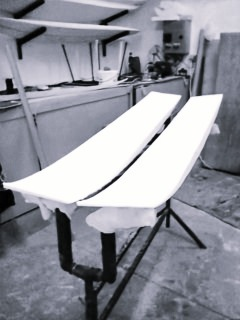
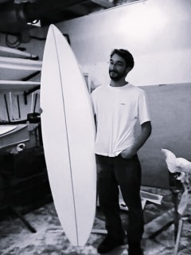
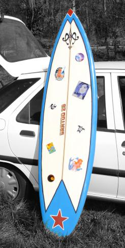